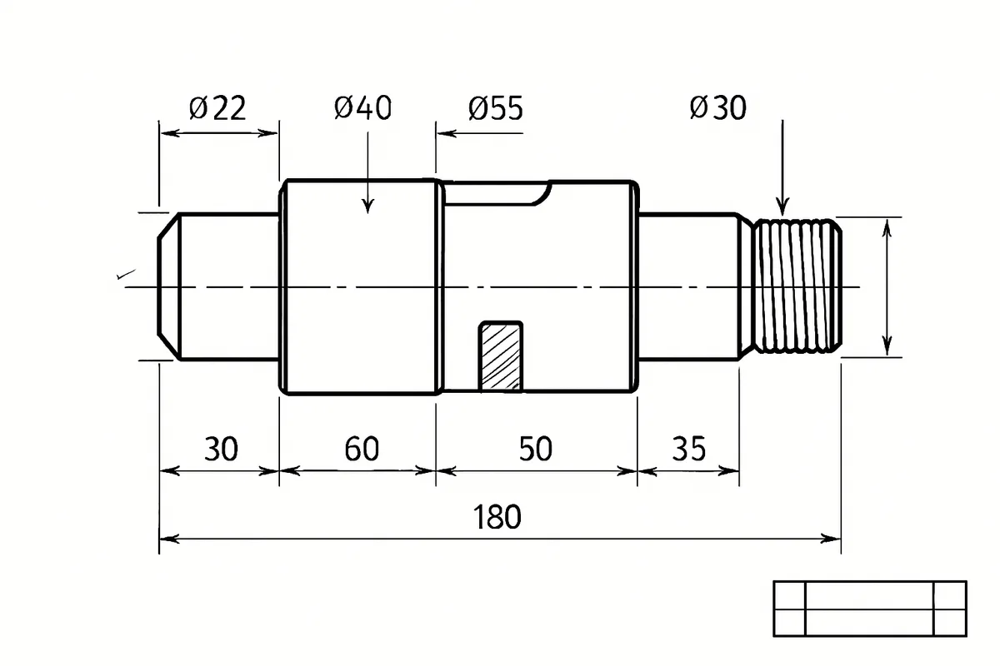
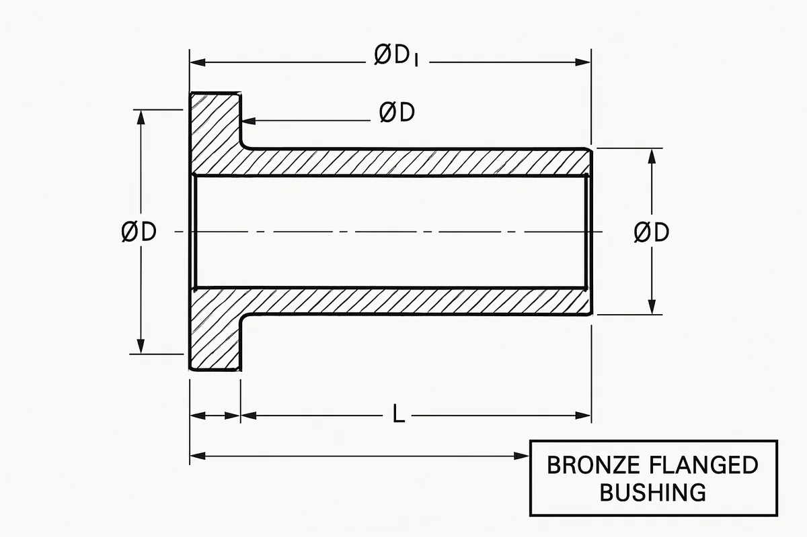
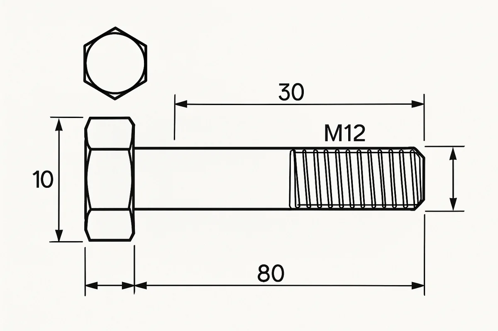
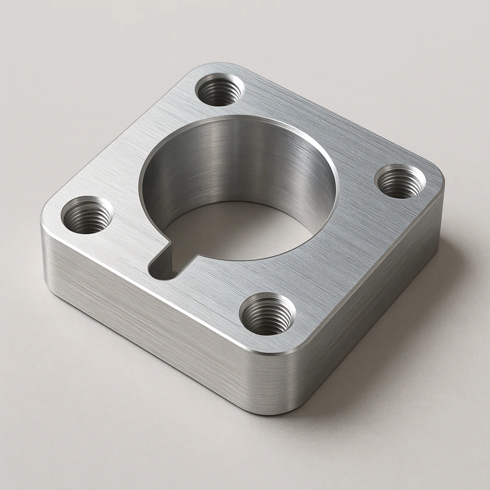
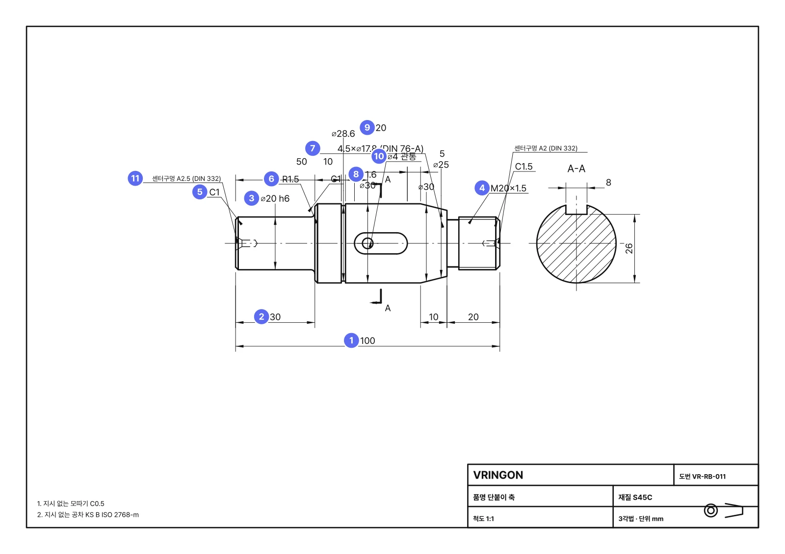

업로드 전에 읽어 주세요
어떤 도면을 어떻게 올리나요
이 데모는 선반에서 깎는 회전체 한 부품(축·부시·핀·롤러·스페이서·플랜지·슬리브·볼트/나사류)의 정면도 한 장을 읽어 파라메트릭 DSL 로 옮깁니다. 조립체·판금·하우징이나 여러 부품이 한 장에 있는 도면은 읽지 못합니다.
1. 되는 도면 · 안 되는 도면
아래 삽화는 종류를 보여 주기 위해 이미지 모델이 그린 것이라 숫자·기호는 실제 도면과 다를 수 있습니다. 치수 기준은 2절의 실제 도면을 보세요.





2. 치수는 어디를 기준으로 읽나
아래는 이 저장소의 렌더러가 정답 DSL 에서 그린 실제 도면(단붙이 축)입니다. 번호가 판독기가 읽는 항목이며, 올리는 도면도 같은 관례를 따르면 정확도가 가장 높습니다.

가장 중요한 하나: 전체 길이(①) 와 연쇄 길이(②). 부품 아래 두 줄로 놓고, 연쇄에서 하나를 생략했다면 나머지 합과 전체 길이로 유추합니다.
지름은 반드시 ⌀ 를 붙이고(수직 치수선), 나사는 M호칭×피치 호출로, 홈은 폭 + ⌀홈지름 로 적어 주세요.
정적 데모(서버 없음)의 업로드는 문자를 읽지 않으므로 왼쪽 "전체 길이" 칸에 값을 넣어야 절대 치수가 맞습니다.
3. 파일 · 해상도 체크리스트
- 한 장에 한 부품, 정면도(축이 가로로 긴 뷰). 키홈 단면 A-A·육각 단면은 옆에 있어도 됩니다.
- PNG 또는 SVG 를 우선하고, JPEG 은 화질 90 이상. 부품 가로 폭 1,000px 이상(권장 1,500px+). 흐리거나 기울어진 사진은 반듯하게 잘라서.
- 외형선은 굵게(0.5mm), 치수선·보조선·중심선은 가늘게(0.18~0.25mm) — 이 굵기 차이로 실루엣을 분리합니다.
- 단위 mm. 인치 도면(.19 같은 표기)은 온프렘 AI 판독이 ×25.4 로 환산합니다.
- 표제란의 품명·재질·도번은 그대로 옮겨집니다(있으면).
4. 판독은 어떻게 이루어지나 (OCR 에 대해)
| 모드 | 형상(비율) | 치수 문자 | 결과 |
|---|---|---|---|
| 정적 데모 (GitHub Pages) | 브라우저가 외형선만 남겨 실루엣 r(x) 를 재고 세그먼트로 나눕니다(결정론). | 읽지 않음 — 별도 OCR 엔진이 없습니다. | 비율은 정확, 절대 치수는 "전체 길이" 입력 하나로 정합니다. |
| 온프렘 서버 | 같은 실루엣 측정을 힌트로 보냅니다. | 시각 LLM 이 치수 문자를 전부 읽어 dims_read 에 근거로 남기고, DSL 과 대조해 안 맞으면 스스로 한 번 고칩니다. | 골든 17종 기준 세그먼트 F1 100%, 치수 일치 98%. |
즉 온프렘에서는 문자 인식(OCR)에 해당하는 일을 시각 LLM 이 의미 해석과 함께 수행합니다. 정적 데모에 브라우저 OCR(Tesseract 류)을 붙이면 전체 길이 입력 없이도 절대 치수를 얻을 수 있으며, HANDOFF 의 다음 할 일에 적어 두었습니다.
5. 표현할 수 있는 형상
| 구분 | 지원 | 미지원(다음 버전) |
|---|---|---|
| 외형 | 원통·테이퍼·수나사 세그먼트, 모따기 C, 필렛/라운드 R, 도피홈(DIN 76/509), 환형 홈(멈춤링·오링) | 곡면(구면·원호) 프로파일, 스플라인, 편심 |
| 내경 | 관통/막힌 보어(단붙이), 입구 모따기, 센터구멍(DIN 332), 육각 소켓 | 내부 홈, 암나사 형상(호칭만 기록) |
| 비축대칭 | 키홈(DIN 6885), 평면(D컷·양면), 육각, 횡구멍(관통/막힘), 널링(표기) | 볼트 원 위 축방향 구멍(플랜지), 방사 슬롯, 나사 형상(장식 표현) |
6. 내려받기 형식
| 형식 | 어디서 | 내용 |
|---|---|---|
| STEP | 온프렘 실행기(CadQuery/OCP 7.9) · 샘플은 미리 생성 · 브라우저는 면분할 | 해석적 B-rep(원통·원추·평면). 브라우저 STEP 은 삼각형 면 B-rep(AP214). |
| OpenUSD | 브라우저 usda·usdz(three.js r185 USDZExporter) · 실행기 usdc(usd-core 26.x) | 메시 + DSL 파라미터를 vringon:* custom 속성으로, metersPerUnit 0.001 |
| GLB · OBJ · STL · PLY | 브라우저 (three.js r185 exporters) | mm 단위 메시. STL 은 프린팅용 바이너리. |
| FBX | 브라우저 (ASCII 7.4 작성기) | Maya·3ds Max·Unity·Unreal·Omniverse 에서 열림. Blender 는 ASCII FBX 를 읽지 않으니 GLB 를 쓰세요. |
| DXF · SVG | 브라우저 | DSL 로 다시 그린 제작 도면(레이어·치수 포함, R12). |
| JSON | 브라우저 | DSL 자체 (schema/shaft_dsl.schema.json). |
7. 판독 결과를 고치면
오른쪽 세그먼트 표·JSON 에서 값을 고치면 3D 와 다시 그린 도면과 검증이 동시에 다시 계산됩니다(DSL 이 원본). 올린 도면 이미지 자체는 바뀌지 않고, 그 위에 판독 외형선이 겹쳐 보이며 "도면 보기 › 재생성" 으로 DSL 에서 다시 그린 도면을 볼 수 있습니다. 반대 방향(이미지 → DSL)은 판독 단계에서만 일어나고, 그 정밀도가 검증 패널의 IoU·치수 정합으로 표시됩니다.